Google X/Y: Dashboard
A speculative design project exploring Google's place in the Internet of Things. Part of an undergraduate studio at the University of California, San Diego under direction of Benjamin Bratton entitled Google X/Y that theorized the company's prospective roles.
Wearable Seizure Monitor
A wearable seizure monitor that could reach out for help at a time when the wearer himself could not.
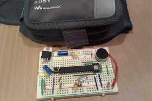
Digital Wind Chime
A wind chime that reacts to "digital wind," which is the realtime twitter activity of any chosen phrase or hastag.
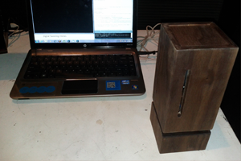
USB Drive Social Network
A physically distributed social network that users must take turns passing around in order to participate.
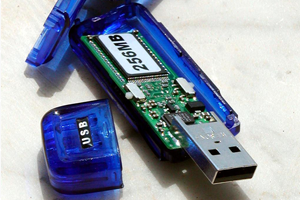
GeoQuest: Locative MMORPG
A locative mobile roleplaying game with an IRC-style chatroom that required users to seek out scavenger-like quests on the map.
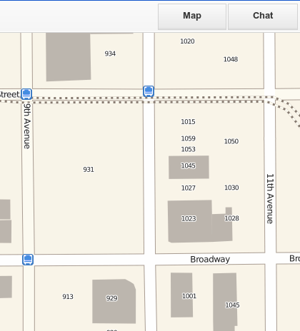
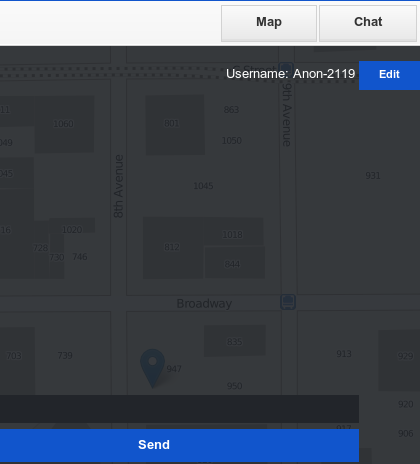
Conversations with the Web - Twitter Visualization
A speculative design project exploring Google's place in the Internet of Things. Part of an undergraduate studio at the University of California, San Diego under direction of Benjamin Bratton entitled Google X/Y that theorized the company's prospective roles.
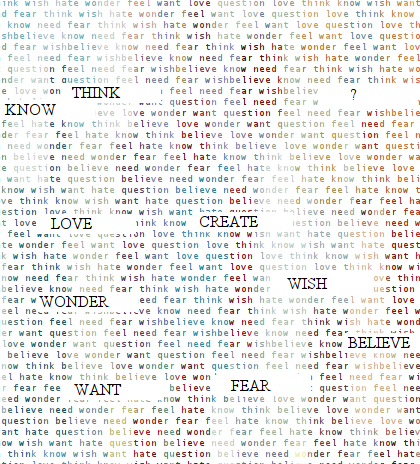
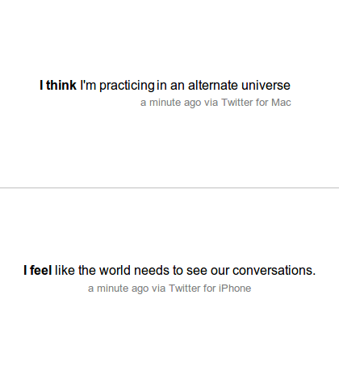
Political Conversations Across the Web
An exploration of the relationship between social media and politics through an examination of the Egyptian revolution.
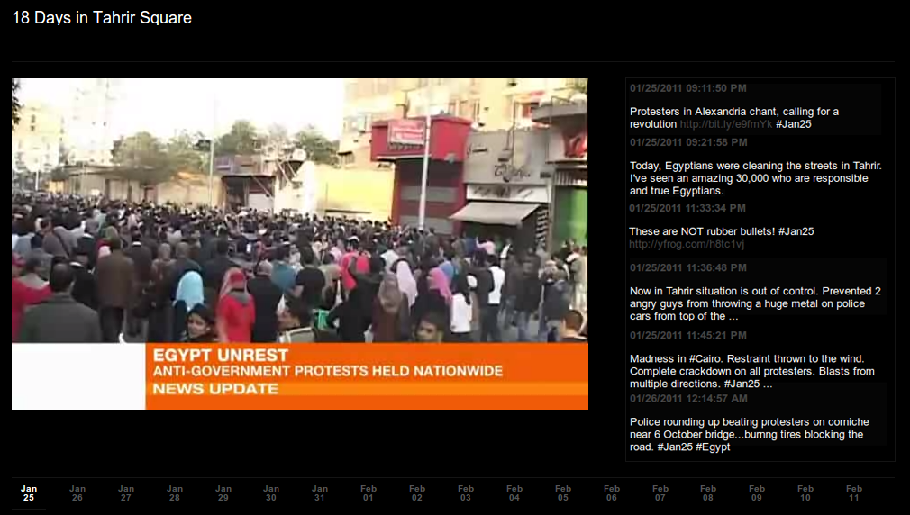
Planeshift - A 3D Fantasy MMORPG
A redesign for the user interface and website of a free and Open Source MMORPG game.
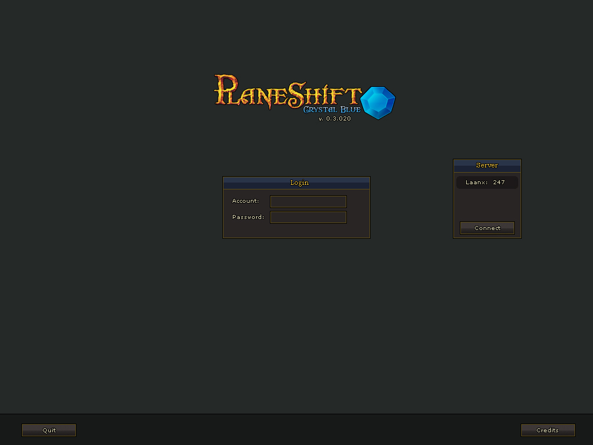
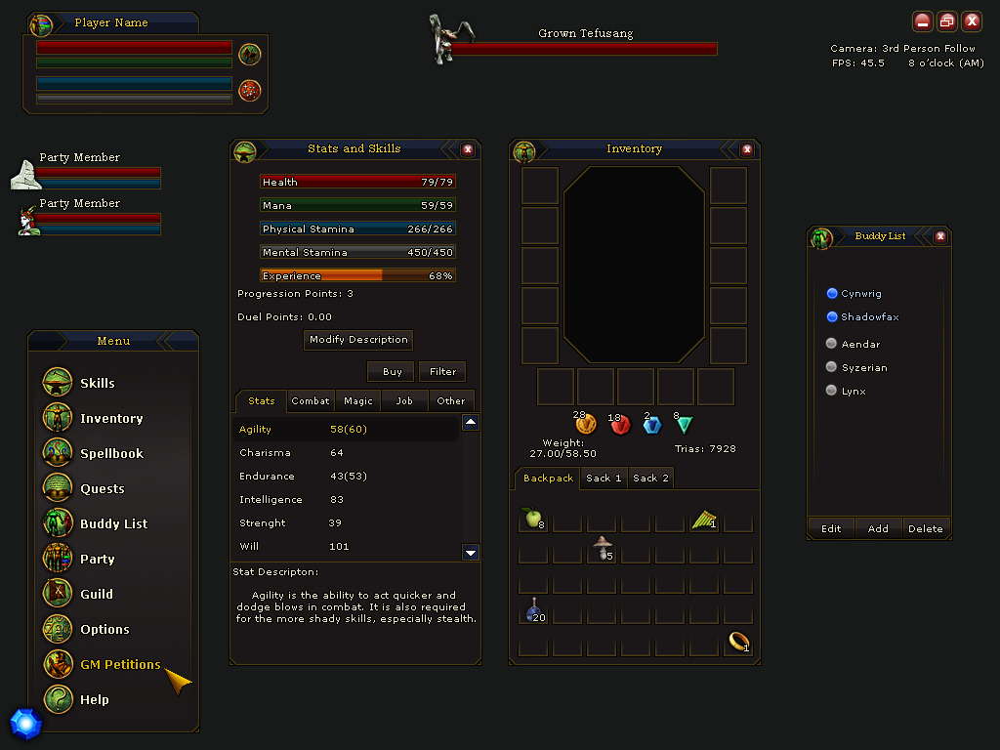
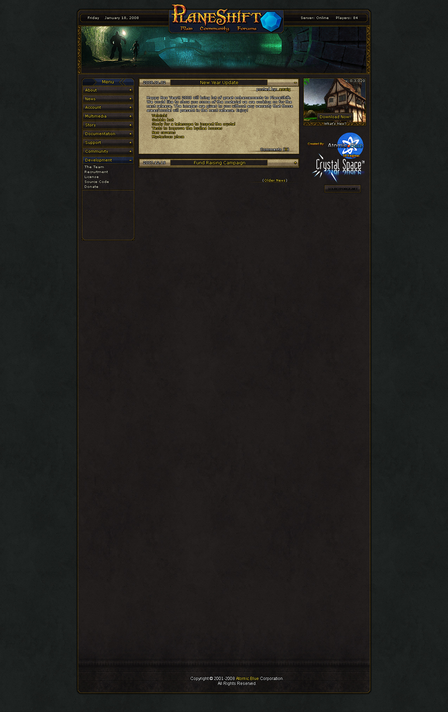